Melon's North America Trip - Page 3
Melon's North America Trip - Page 3
Melon's North America Trip - Page 3
Melon's North America Trip - Page 3


The final days.. Melon looks around SF and goes to Sacramento for a weekend!
So Sheep and rsl headed off today before I got up. Iv been getting some questions about them so here seems like a sold place to answer those. I met rsl and sheep on my minecraft server about 5 years ago and we have been in contact ever since. This trip was our first time meeting in person however. Rsl is from Finland and is kinda like the BFG :P Sheep is from the UK and sometimes seems like the kinda guy who would sell you a dodgy used car but hes actually great. It was quite odd meeting in real life, it wasent awkward or anything really, we just sort of carried on from how we talked online. Hanging out with them felt allot like how I remember hanging out with friends in primary school used to feel, kinda just simple and fun, without all the crap of growing up that happens in secondary school.
Anyway, I was really sick again this morning so I took it very slow. Got some food, did the laundry, recovered a bit. Decided not to waste the day so I wandered towards the Cable Car Museum that was about 15 mins walk away.. turns out it was 15 mins up a very steep hill :/ Anyway it was really awesome, exactly how a museum was supposed to be, because it was not a museum, its the actual pully system working that operates the whole cable car system and they just have a museum thing around it.
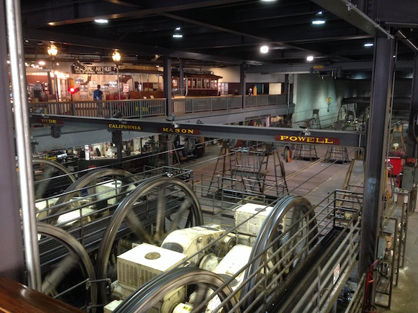They have not really changed the museum in the last 30 years or so because it was all very classic, they even had a video explanation thing that had been filmed sometime in the late 70s, complete with like a funk jazz song about cable cars and an afro clad cable car driver. All the staff there had hipster beards.
After that I made my way to Fishermans Warf since it was pretty close, Im not a big seafood person so it was not really my kinda place, but it has an amazing arcade! They have like loads of arcade games from 1900 to 2000. I spent like 2 hours in there playing with stuff. You can press a button and an alarm goes off and a guy pops out of a door to give you more quarters. I made every player piano play at least once :P
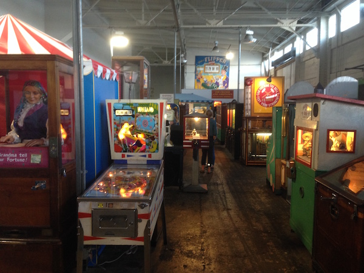 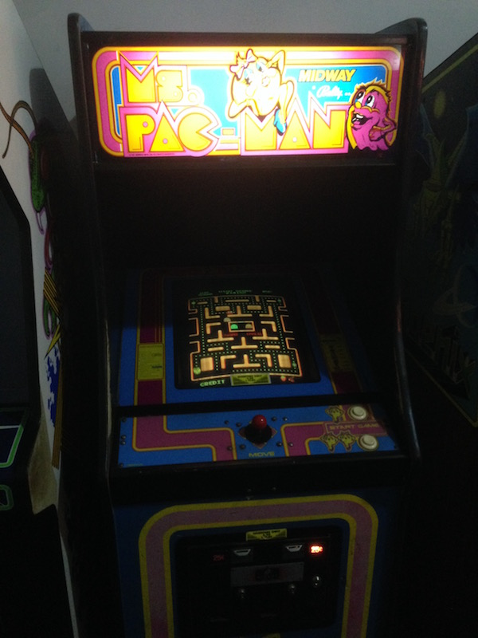After that I took the cable car back to the hostel. Omg the cable cars. I always assumed they would have like new ones or something, but they are exactly the same as the ones in the museum, they have not changed since 1880 or something. They are brillant, you just hang on on the side while an angry Chinese man pulls a lever that grabs a cable going 9mph under the road and your suddenly being pulled down a huge hill with cars rushing past, its so dangerous, a car almost hit us, I would have died! It was great! I coudent really capture it moving but heres the inside :P
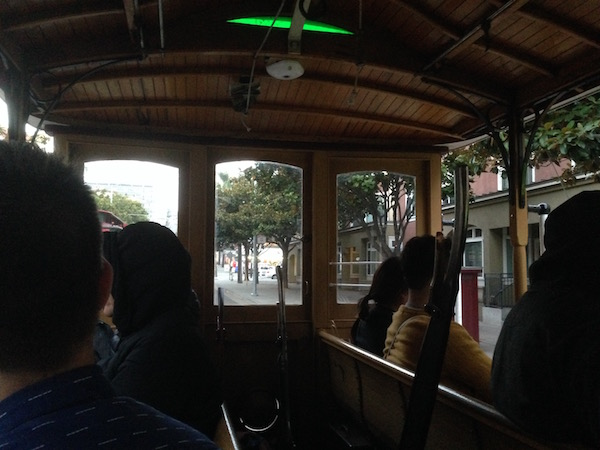So far San Francisco is the only part of the US that is living up to the America I was promised by all those story books and tv shows I saw when I was little. Its very pleasing. I ended up getting ramen with this guy from the hostel who seems to be permanently high which I guess is quite entertaining, though after all the socialising the last few days I would actually really like to just take a few days to myself if at all possible.
Im also really getting sick of being in a hostel.. they are fun, but the ones in the US really dont have half the privacy of ones elsewhere, you cant sit alone for 5 mins, no curtains on beds, everyone talk loudly. I wish I could afford a hotel for the last few days, but they cost bazillions here!
So I check the weather today and its the only day on my whole trip where the golden gate wont be in fog. So I headed there earlyish after a VERY EXPENSIVE pancake and coffee. I cant figure out how to eat cheaply in this city, seriously, I did not expect a place offering an all day breakfast to have marble floors and $15 pancakes.. Anyway, I got out to the bridge on a $6 uber so I guess that made up for it. Im not really sure how much money I have, the bank says €1700 but only 600 is available, im not sure what I spent the other 1000 on or if its going in or out.. I did notice people treat you differently when you dress in black and have a google branded bag here :P
The bridge is nice, took me about 25 mins to walk across it, there is not much over the other side, just a bunch of tourists getting the bus back over it again because they are lazy. I had earphones in though so I dont think it would be so nice to walk without those due to the cars.
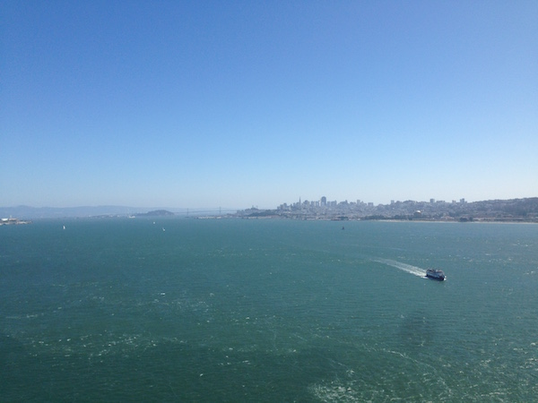After that I made my way towards the Walt Disney Family museum, which is a museum run by the family and is not connected to the company. Basically its the fancy museum for super diehard Disney fans who take their Disney as very serious business. Is in the middle of the this huge military grave yard and next to the.. I think.. Pioneers Society of America.. something like that.. they had and exhibition of gold rush stuff including an amputation kit that was actually the most horrifying thing Iv ever seen.
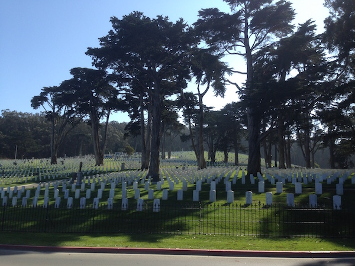 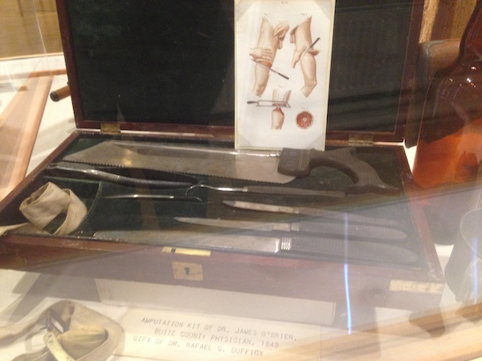Anyway there was not a single kid in the Disney museum, just a few Chinese people, and some Americans that knew far too much about particular random objects and liked to talk to the staff at length about them. It was actually a very good museum though, the staff told me multiple times that most people took about 2 hours to get though it and I guess I took about that too :P
I find the contrast in treatment in the US very jaring, the staff in Disney are soo sweet and polite, and then everyone in the area around them looks as you suspiciously, and then just across the water is a place with the highest gun crime in the world or something. Its very confusing! Anyway, they had this really cool model of Disneyland as it was when Walt was alive and they made quite a strong point of this as if they did not agree with the way the real place is now. It has the House of Tomorrow on it which I would have love to visit but it was demolished a while ago.
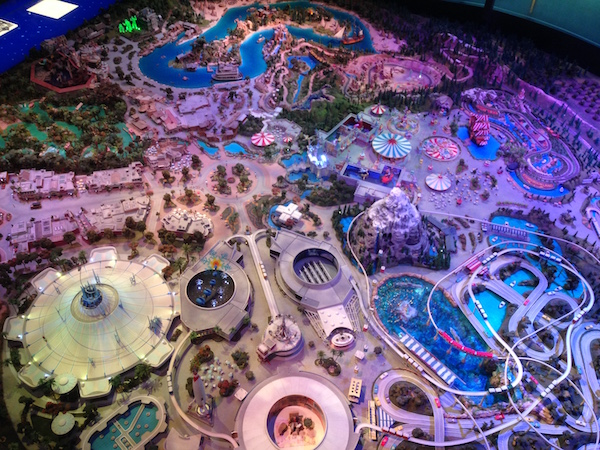 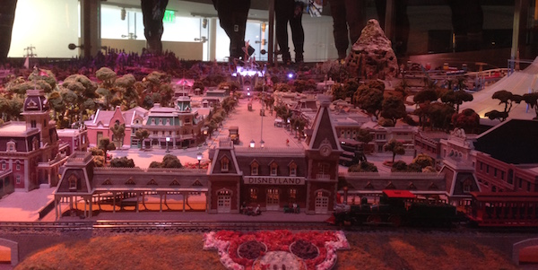Also I learned that Walt Disneys favourite foods were chilli con carne and jelly (Jell-O as people call it here). I can relate to this very much xD
So I felt like a bit of a change of scene and had kinda run out of things to do in SF so I took the weekend to go to Sacramento. Which is both a really boring and surpassingly interesting place. I think if any play iv seen on this trip actually helps explain America its Sacramento. Anyway, I hoped a megabus and arrived about 2pm on Saturday, I would have taken a train but it needed a changeover at Richmond station which is in something called the iron triangle.. every review of it said "Don't leave the station" "Don't look at anyone" "Don't stand still to long" "Remain in groups and move quickly" soo yah..
Sacramento appears to be a goldrush / railroad town based on the museums it has, its also the capital of California for some reason which totally iludes me. There are no tourists there, in fact everyone in the entire city wears a baseball cap, a washed out tshirt, worn blue jeans, and probably has a support our troops sticker in their car. I got an uber drive from a nice man from Vietnam who had worked for sun microsystems in the 80s (Which is a really influential tech company, you probably are using something they invented right now, but they went bankrupt in the mid 90s) he was annoyed they had not appreciated him more.
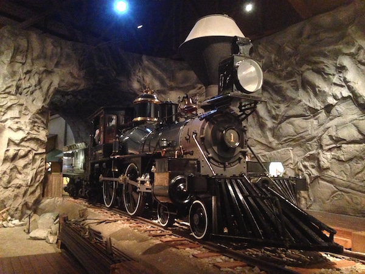They have a really amazing railroad museum that has steam trains coming out the wazoo thats located in a section of the city thats been renovated to appear as a fronteer town, you can even ride in the trains under steam power during the summer months. Actually the whole city has a very fornteer vibe, even with cars and modern buildings. There are lots of gift shops too where you can buy baseball caps and washed out tshirts and stickers saying support our troops :P
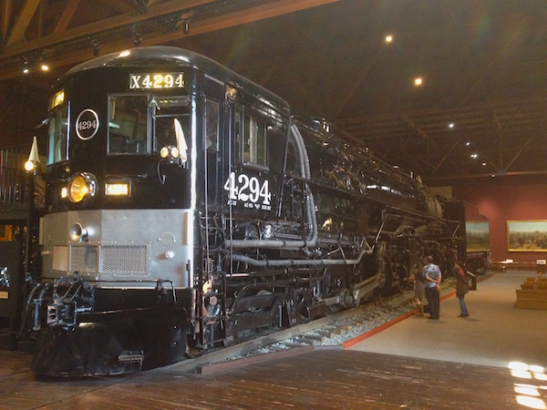 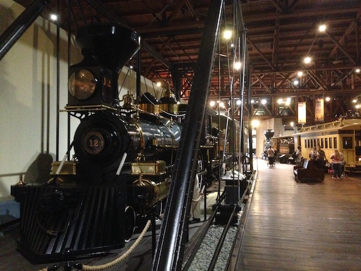The rail museum was built on the ground breaking site for the Central Pacific Railroad which was the rival company to the Union Pacific Railroad that the show Hell on Wheels is about (I really like that show but not season 3+) Theres also a really cool museum about the gold rush and general wildwestyness which I enjoyed mostly because iv always had a soft spot for fronteer stuff.
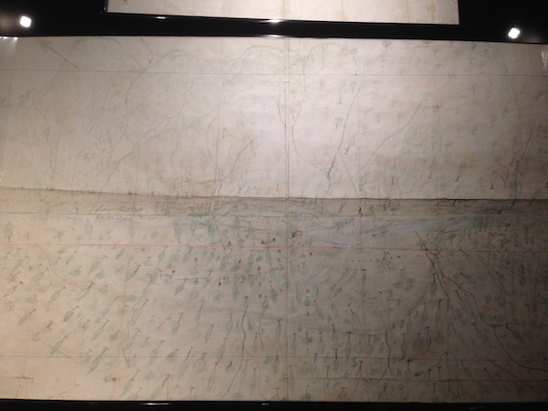Thats a picture of the map showing where gold was in california drawn by the guy who found gold in california. That map started the whole gold rush!
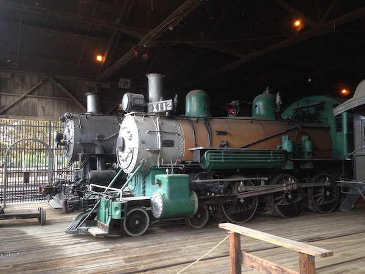 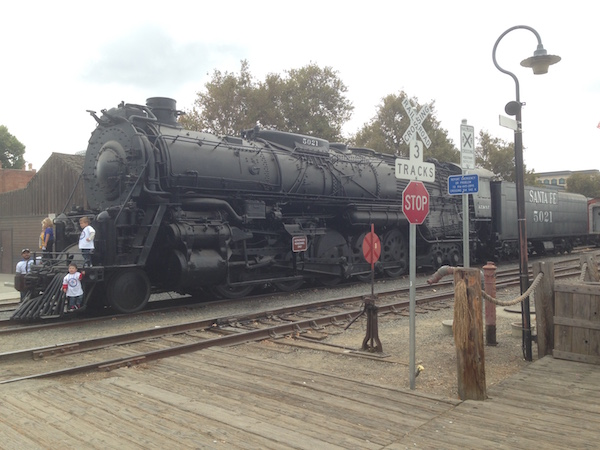*Fun Fact* The trains with the weird big funnel were only ever made to travel through california as the big funnel is designed for wood burning engins to catch embers so they dont start fires.
Anyway if you like trains or fronteer towns or both like me then this makes any excellent day trip, otherwise the city is pretty bland, its the only place Iv ever seen an empty Starbucks!
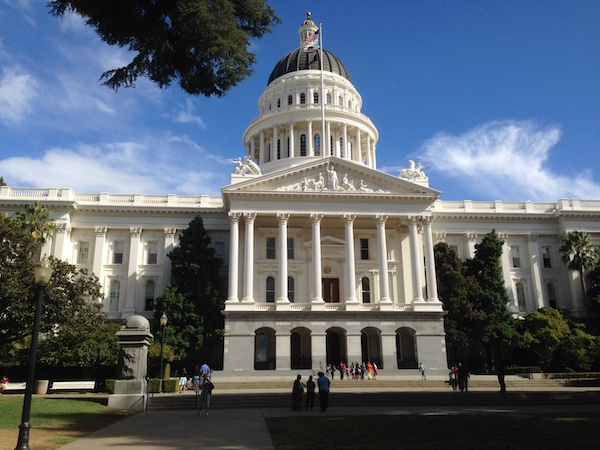 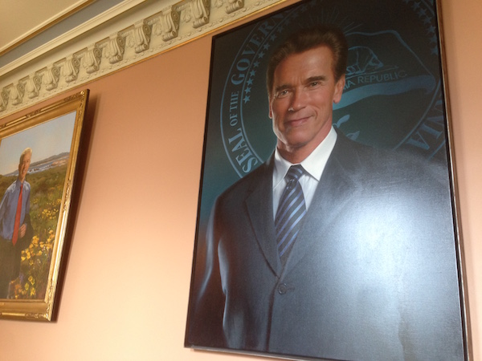So today was the last day, I got up early, did the SF thing and queued for 20 minutes at a cafe to get a bowl of granola with fruit and yogurt, then made my way to pier 33 with a deaf uber driver.
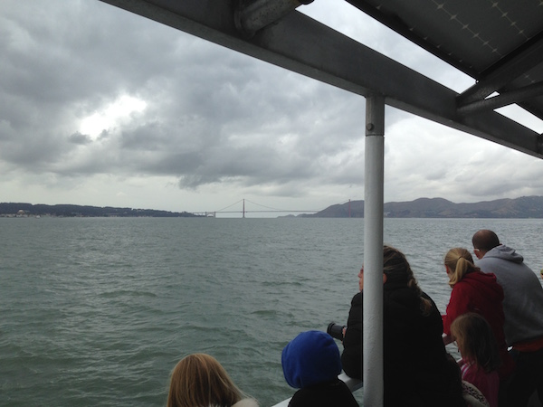Look I'll be honest, you can hype alcatraz up all you like, it's a cold salty rock with a derelict prison on it, with admittedly a very well done audio tour describing what it was like to be in prison. The boat drivers and staff have possibly not fully got the memo that the prison is gone and give very direct orders. The audio guide is even better, it just like "Turn your back to the left, walk slowly, notice the marks on the wall!" Its great it actually thinks for you, you can just be a puppet and let it manage your existence for a while.

There is one particularly grim part where they show you a cell that 8 guards were locked in and then shot dead by prisoners who had managed to get guns.. That was.. yeh... Anyway, after you go through the gift shop where everyone but me was purchasing a reproduction prison cup you end up wandering around a grey rainy island with a lighthouse and a very dirty morge. After that your done! I certainly never need to do any more time there to learn my lesson thats for sure..
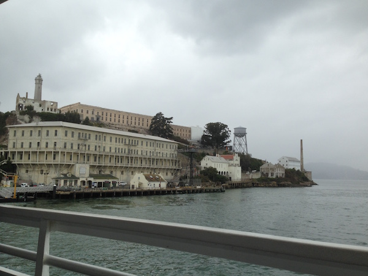I hung around fisherman's warf for a few hours after that, went to the arcade to get rid of a few quarters and buy some more pins. I have collected an impressive array on pins this trip!
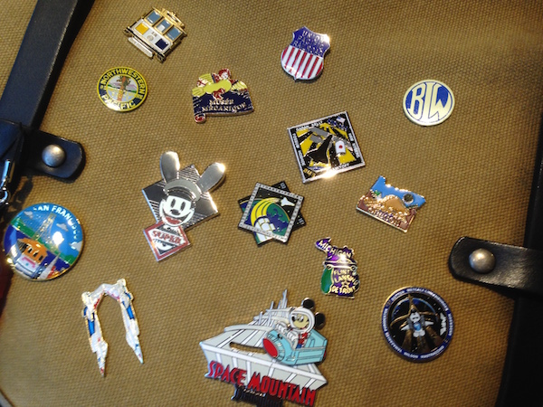I took a final cable car ride too, I made a whole video of it this time, so I might upload a virtual cable car ride page when I get faster internet :O It was full of old germans and possibly an irish couple, they had the accent anyway. After that, I had a mad dash around japantown looking for a ramen, and eventually got one, so ended my day :P
Oh and I had this really long chat with a guy in my hostel room who is like a Chinese American who was part of an evangelical cult growing up. He is very unhappy with trump and says the people of the US want the government to be as stupid as they are, and the CCCP performed more blessings (Benefits to mankind, e.g housing the poor, I asked!) then the church in the last 80 years. He also gave me some very sound advice about investing in the stock market and recommended I move to Hong Kong. Its typical me that I like talking with outsiders like that more than any of the endless German backpackers that all seem more lost than the previous.
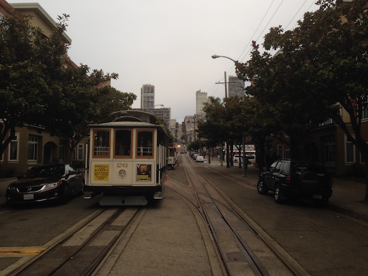So I guess this is time for my grand San Francisco summery. Its a very hard city. Its very expensive, everyone is working very hard here. I asked an uber driver if the tech boom had been bad for the city and he said no. It has driven out anyone who is lazy or not willing to pull their own weight. It has closed down businesses who are not good enough to survive and rewarded those that are. While it sounds cruel to me, its pretty evident that its that attitude and drive that has made this place the center of the world in the 21st century.
That said Iv also seen more homelessness here than any other city, with food lines going around whole blocks. Just walking down the street here is exhausting, but it also makes you want to do stuff and make things. I think the homelessness is almost part of it, its like a constant reminder saying "This could be you if you dont succeed" so yeh, its a very hard city.